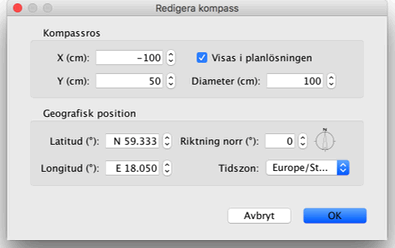

| Ändra kompassen och geografisk plats | |||
Varje nytt hem visar en kompassros i övre vänstra hörnet av dess planlösning. Precis som andra objekt i planlösningen kan den flyttas med drag och släpp-operation eller med pilarna på tangentbordet efter att du har valt det. När kompassrosen är det enda valda objektet i planlösningen kan du ändra storlek på den eller ändra riktningen för norr med dess indikatorer.
|

|
När muspekaren är på en av dessa indikatorer ändrar den sig för att visa att du kan dra och släppa denna punkt. Kompassrosen och den geografiska platsen för ditt hem kan också redigeras tack vare dialogrutan som visas med ett dubbelklick på kompassrosen i hemmets planlösning, eller genom att välja Planlösning > Ändra kompass... från menyn.  I dialogrutan för kompassen kan du ändra läge, diameter, nordriktningen för kompassrosen och ställa in om den ska visas i planlösningen eller inte. Du kan också välja latituden och longituden för hemmets geografiska plats samt vilken tidszon det befinner sig i. |
|